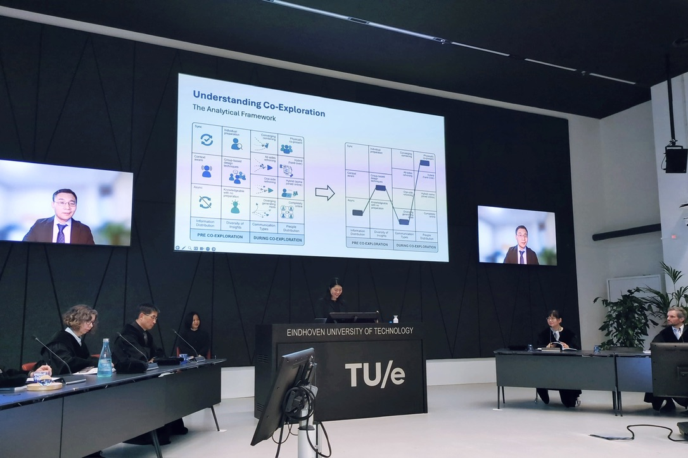
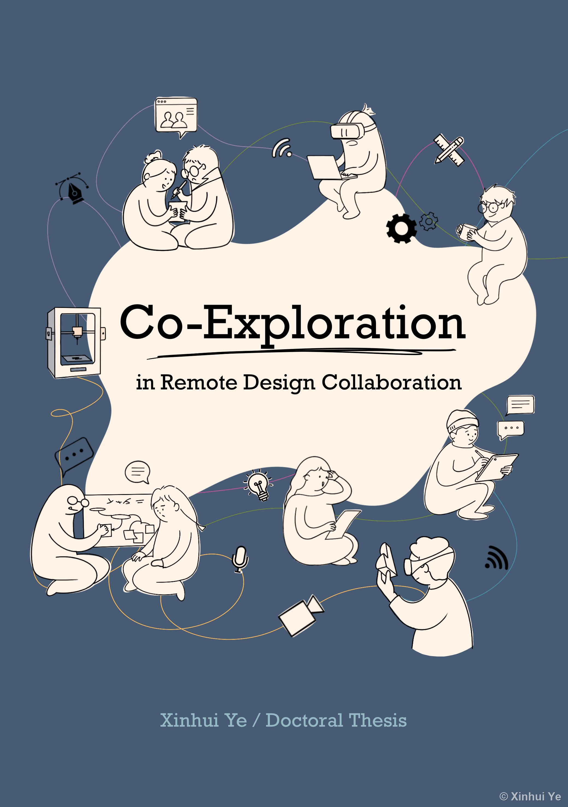
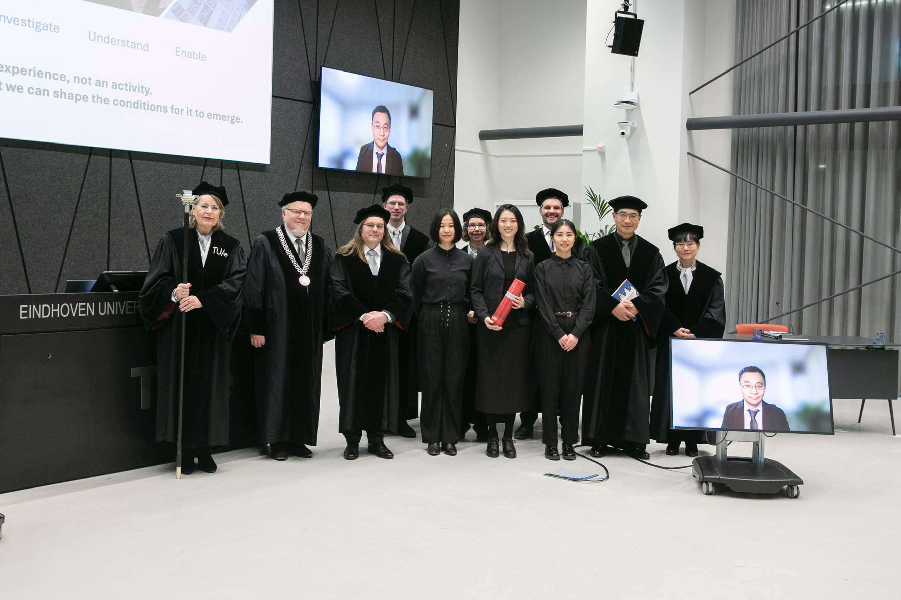
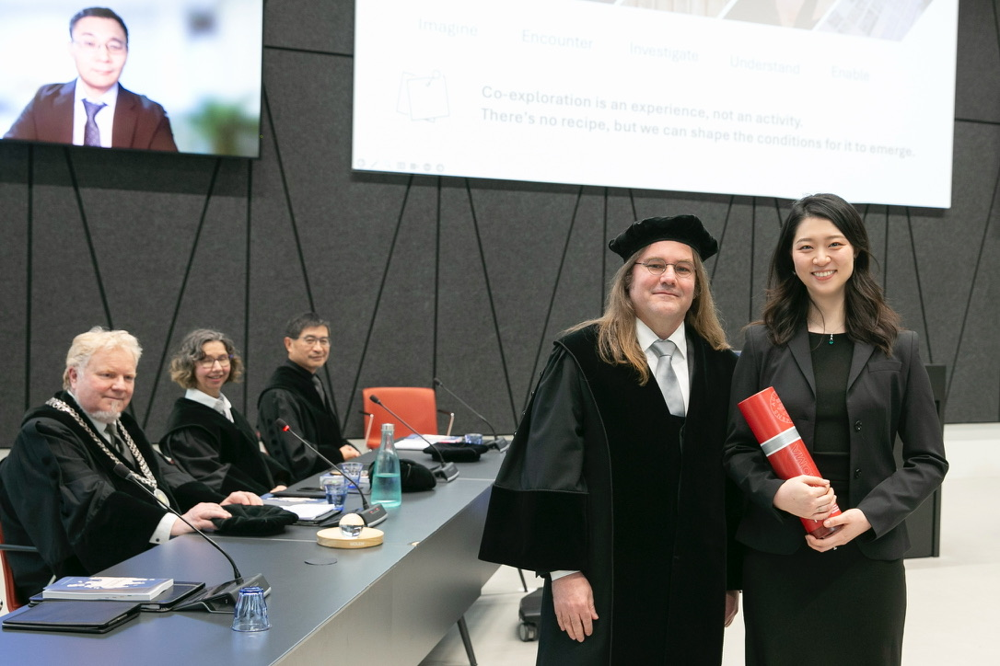
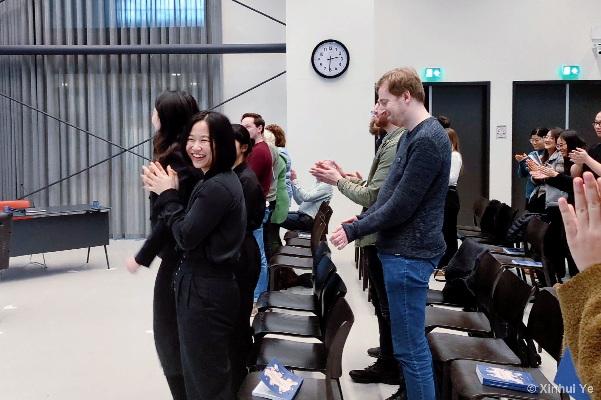
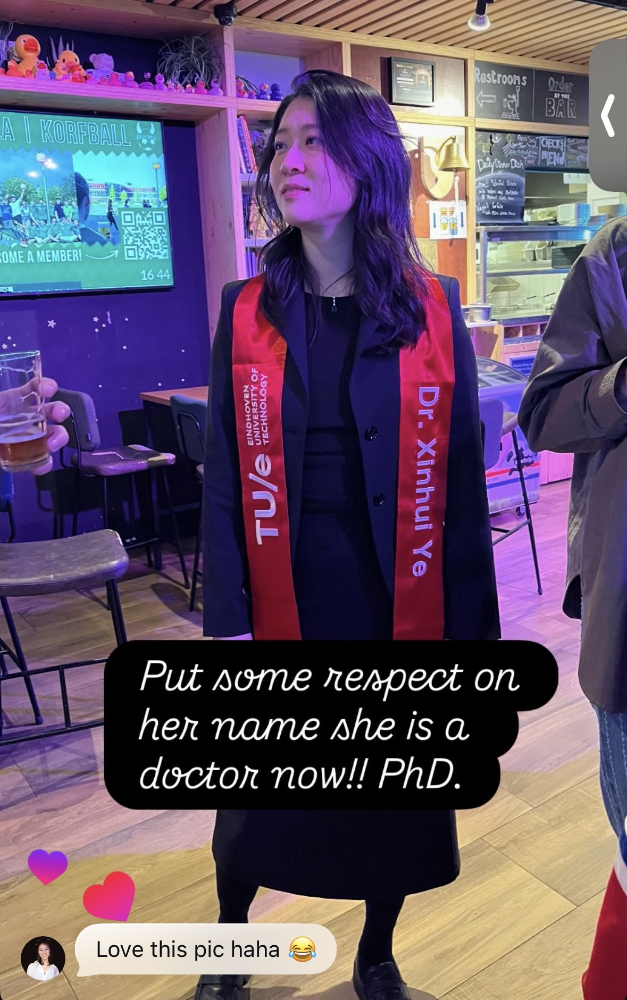

Defense Day

PhD, Eindhoven University of Technology (TU/e)
This year I graduated. I defended my doctoral thesis at TU/e before a committee drawn from universities around the world — a demanding, joyful ceremony, and a wonderful way to close the chapter.
My thesis, Co-Exploration in Remote Design Collaboration, asks how designers explore ideas together when they work apart. When design moved online, teams lost the shared materials and the shoulder-to-shoulder rhythm that let them explore together. The thesis sets out to understand and support that lost togetherness.
"Valuable, hard-to-express knowledge is lost, such as material feel, rhythm of actions, or the pace at which ideas build on each other. Ye's research explores exactly that gap: how do you support co-exploration when not everyone is at the same table?"
"Add another quotation here — for example, a remark from a committee member, an opponent, or a reader of the thesis."
"Another quotation goes here. Keep it to a few sentences so it reads well on the card."
"And one more, so you can see how the carousel scrolls with several quotes."
The book brings together the peer-reviewed papers I published during my PhD, across venues including IEEE Pervasive Computing, She Ji: The Journal of Design, Economics, and Innovation, and the IFIP INTERACT conference.
I designed the cover, and wrote and illustrated all of its content myself — weaving four studies into a single argument: that supporting collaborative design is less about any one tool and more about setting the right conditions for co-exploration to happen.




